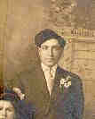

|
|
 Joseph FRECHIONE (1888-1918) |
Joseph FRECHIONE
• He emigrated in 1906 from Italy. 2 • He appeared in the 1910 census on 6 May 1910 in Penn Township, Allegheny, PA. 2 Joseph married Filomena IALENTI, daughter of Pasquale IALENTI and Michela MATTAROCCHIA, on 8 Nov 1909 in Youngstown, Mahoning, OH.1 2 (Filomena IALENTI was born on 7 Oct 1891 in Campolieto, Campobasso, Molise, Italy,4 5 6 died on 30 Aug 1978 in Verona, Allegheny, PA 5 6 7 and was buried in Sep 1978 in Mt. Carmel Cemetery, Verona, Allegheny, PA 8.) |
1 Clerk of the Probate Court, Application for Marriage License for Giuseppe Frechione and Philomena Ialenti (Youngstown, OH, 10 Jan 1910).
2 Pennsylvania, Allegheny County, 1910 U.S. Census, Population Schedule (Washington, D.C., National Archives and Records Administration), ED 191, Sheet 13, Line 23.
3 Thomas Hoey, Interview of Bernard Tresca (Pittsburgh, PA, 2 Sep 2002).
4 Comune di Campolieto, Prov. di Campobasso, Birth Record of Filomena Ialenti (Campolieto, Campobasso, Italy, 10 Oct 1891).
5 Commonwealth of Pennsylvania, Department of Health, Bureau of Vital Statistics, Death Certificate - Philomena (Ialenti) Tresca (1 Sep 1978).
6 Social Security Administration, Death Master File (http://www.ancestry.com/search/rectype/vital/ssdi/main.htm).
7 Funeral Home, Mass Card (Obtained from Helen (Yalenty) LaMarca).
8 Bernard and Alice Tresca, Ancestry of Giavanni Tresca (Clearwater, FL, 14 May 2003).